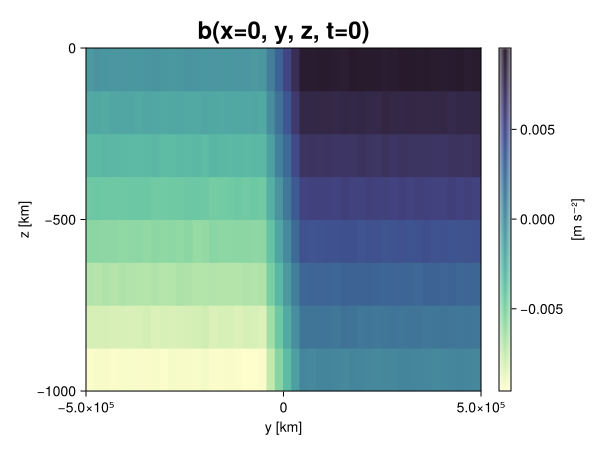
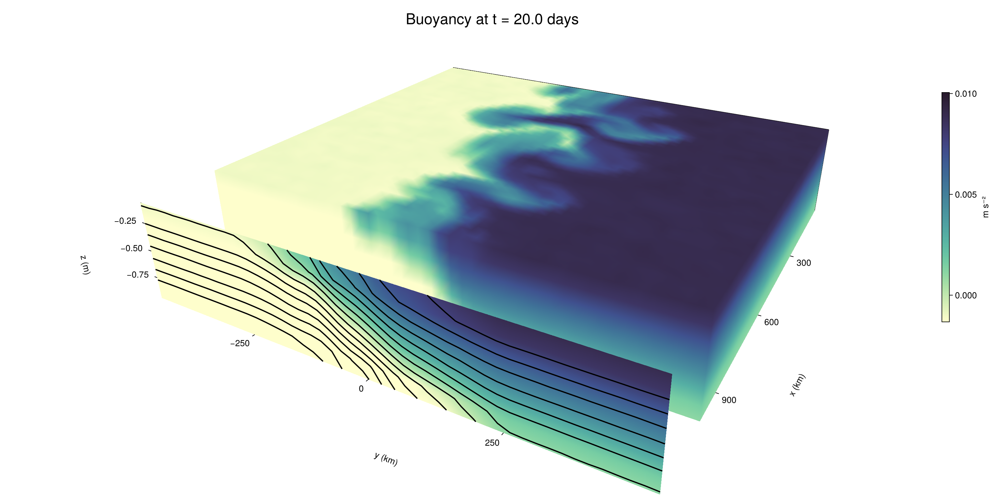

Baroclinic adjustment
In this example, we simulate the evolution and equilibration of a baroclinically unstable front.
Install dependencies
First let's make sure we have all required packages installed.
using Pkg
pkg"add Oceananigans, CairoMakie"using Oceananigans
using Oceananigans.UnitsGrid
We use a three-dimensional channel that is periodic in the x direction:
Lx = 1000kilometers # east-west extent [m]
Ly = 1000kilometers # north-south extent [m]
Lz = 1kilometers # depth [m]
grid = RectilinearGrid(size = (48, 48, 8),
x = (0, Lx),
y = (-Ly/2, Ly/2),
z = (-Lz, 0),
topology = (Periodic, Bounded, Bounded))48×48×8 RectilinearGrid{Float64, Periodic, Bounded, Bounded} on CPU with 3×3×3 halo
├── Periodic x ∈ [0.0, 1.0e6) regularly spaced with Δx=20833.3
├── Bounded y ∈ [-500000.0, 500000.0] regularly spaced with Δy=20833.3
└── Bounded z ∈ [-1000.0, 0.0] regularly spaced with Δz=125.0Model
We built a HydrostaticFreeSurfaceModel with an ImplicitFreeSurface solver. Regarding Coriolis, we use a beta-plane centered at 45° South.
model = HydrostaticFreeSurfaceModel(; grid,
coriolis = BetaPlane(latitude = -45),
buoyancy = BuoyancyTracer(),
tracers = :b,
momentum_advection = WENO(),
tracer_advection = WENO())HydrostaticFreeSurfaceModel{CPU, RectilinearGrid}(time = 0 seconds, iteration = 0)
├── grid: 48×48×8 RectilinearGrid{Float64, Periodic, Bounded, Bounded} on CPU with 3×3×3 halo
├── timestepper: QuasiAdamsBashforth2TimeStepper
├── tracers: b
├── closure: Nothing
├── buoyancy: BuoyancyTracer with ĝ = NegativeZDirection()
├── free surface: ImplicitFreeSurface with gravitational acceleration 9.80665 m s⁻²
│ └── solver: FFTImplicitFreeSurfaceSolver
├── advection scheme:
│ ├── momentum: WENO reconstruction order 5
│ └── b: WENO reconstruction order 5
└── coriolis: BetaPlane{Float64}We start our simulation from rest with a baroclinically unstable buoyancy distribution. We use ramp(y, Δy), defined below, to specify a front with width Δy and horizontal buoyancy gradient M². We impose the front on top of a vertical buoyancy gradient N² and a bit of noise.
"""
ramp(y, Δy)
Linear ramp from 0 to 1 between -Δy/2 and +Δy/2.
For example:
```
y < -Δy/2 => ramp = 0
-Δy/2 < y < -Δy/2 => ramp = y / Δy
y > Δy/2 => ramp = 1
```
"""
ramp(y, Δy) = min(max(0, y/Δy + 1/2), 1)
N² = 1e-5 # [s⁻²] buoyancy frequency / stratification
M² = 1e-7 # [s⁻²] horizontal buoyancy gradient
Δy = 100kilometers # width of the region of the front
Δb = Δy * M² # buoyancy jump associated with the front
ϵb = 1e-2 * Δb # noise amplitude
bᵢ(x, y, z) = N² * z + Δb * ramp(y, Δy) + ϵb * randn()
set!(model, b=bᵢ)Let's visualize the initial buoyancy distribution.
using CairoMakie
# Build coordinates with units of kilometers
x, y, z = 1e-3 .* nodes(grid, (Center(), Center(), Center()))
b = model.tracers.b
fig, ax, hm = heatmap(view(b, 1, :, :),
colormap = :deep,
axis = (xlabel = "y [km]",
ylabel = "z [km]",
title = "b(x=0, y, z, t=0)",
titlesize = 24))
Colorbar(fig[1, 2], hm, label = "[m s⁻²]")
fig
Simulation
Now let's build a Simulation.
simulation = Simulation(model, Δt=20minutes, stop_time=20days)Simulation of HydrostaticFreeSurfaceModel{CPU, RectilinearGrid}(time = 0 seconds, iteration = 0)
├── Next time step: 20 minutes
├── Elapsed wall time: 0 seconds
├── Wall time per iteration: NaN days
├── Stop time: 20 days
├── Stop iteration : Inf
├── Wall time limit: Inf
├── Callbacks: OrderedDict with 4 entries:
│ ├── stop_time_exceeded => Callback of stop_time_exceeded on IterationInterval(1)
│ ├── stop_iteration_exceeded => Callback of stop_iteration_exceeded on IterationInterval(1)
│ ├── wall_time_limit_exceeded => Callback of wall_time_limit_exceeded on IterationInterval(1)
│ └── nan_checker => Callback of NaNChecker for u on IterationInterval(100)
├── Output writers: OrderedDict with no entries
└── Diagnostics: OrderedDict with no entriesWe add a TimeStepWizard callback to adapt the simulation's time-step,
conjure_time_step_wizard!(simulation, IterationInterval(20), cfl=0.2, max_Δt=20minutes)Also, we add a callback to print a message about how the simulation is going,
using Printf
wall_clock = Ref(time_ns())
function print_progress(sim)
u, v, w = model.velocities
progress = 100 * (time(sim) / sim.stop_time)
elapsed = (time_ns() - wall_clock[]) / 1e9
@printf("[%05.2f%%] i: %d, t: %s, wall time: %s, max(u): (%6.3e, %6.3e, %6.3e) m/s, next Δt: %s\n",
progress, iteration(sim), prettytime(sim), prettytime(elapsed),
maximum(abs, u), maximum(abs, v), maximum(abs, w), prettytime(sim.Δt))
wall_clock[] = time_ns()
return nothing
end
add_callback!(simulation, print_progress, IterationInterval(100))Diagnostics/Output
Here, we save the buoyancy, $b$, at the edges of our domain as well as the zonal ($x$) average of buoyancy.
u, v, w = model.velocities
ζ = ∂x(v) - ∂y(u)
B = Average(b, dims=1)
U = Average(u, dims=1)
V = Average(v, dims=1)
filename = "baroclinic_adjustment"
save_fields_interval = 0.5day
slicers = (east = (grid.Nx, :, :),
north = (:, grid.Ny, :),
bottom = (:, :, 1),
top = (:, :, grid.Nz))
for side in keys(slicers)
indices = slicers[side]
simulation.output_writers[side] = JLD2OutputWriter(model, (; b, ζ);
filename = filename * "_$(side)_slice",
schedule = TimeInterval(save_fields_interval),
overwrite_existing = true,
indices)
end
simulation.output_writers[:zonal] = JLD2OutputWriter(model, (; b=B, u=U, v=V);
filename = filename * "_zonal_average",
schedule = TimeInterval(save_fields_interval),
overwrite_existing = true)JLD2OutputWriter scheduled on TimeInterval(12 hours):
├── filepath: ./baroclinic_adjustment_zonal_average.jld2
├── 3 outputs: (b, u, v)
├── array type: Array{Float64}
├── including: [:grid, :coriolis, :buoyancy, :closure]
├── file_splitting: NoFileSplitting
└── file size: 30.2 KiBNow we're ready to run.
@info "Running the simulation..."
run!(simulation)
@info "Simulation completed in " * prettytime(simulation.run_wall_time)[ Info: Running the simulation...
[ Info: Initializing simulation...
[00.00%] i: 0, t: 0 seconds, wall time: 14.783 seconds, max(u): (0.000e+00, 0.000e+00, 0.000e+00) m/s, next Δt: 20 minutes
[ Info: ... simulation initialization complete (15.470 seconds)
[ Info: Executing initial time step...
[ Info: ... initial time step complete (23.953 seconds).
[06.94%] i: 100, t: 1.389 days, wall time: 40.467 seconds, max(u): (1.287e-01, 1.163e-01, 1.523e-03) m/s, next Δt: 20 minutes
[13.89%] i: 200, t: 2.778 days, wall time: 2.757 seconds, max(u): (2.255e-01, 2.072e-01, 1.796e-03) m/s, next Δt: 20 minutes
[20.83%] i: 300, t: 4.167 days, wall time: 2.846 seconds, max(u): (2.977e-01, 2.776e-01, 1.757e-03) m/s, next Δt: 20 minutes
[27.78%] i: 400, t: 5.556 days, wall time: 2.897 seconds, max(u): (3.729e-01, 3.397e-01, 1.912e-03) m/s, next Δt: 20 minutes
[34.72%] i: 500, t: 6.944 days, wall time: 2.640 seconds, max(u): (4.688e-01, 5.082e-01, 2.069e-03) m/s, next Δt: 20 minutes
[41.67%] i: 600, t: 8.333 days, wall time: 2.760 seconds, max(u): (5.907e-01, 8.109e-01, 2.927e-03) m/s, next Δt: 20 minutes
[48.61%] i: 700, t: 9.722 days, wall time: 2.637 seconds, max(u): (9.590e-01, 1.199e+00, 3.942e-03) m/s, next Δt: 20 minutes
[55.56%] i: 800, t: 11.111 days, wall time: 2.567 seconds, max(u): (1.366e+00, 1.228e+00, 4.639e-03) m/s, next Δt: 20 minutes
[62.50%] i: 900, t: 12.500 days, wall time: 3.226 seconds, max(u): (1.372e+00, 1.204e+00, 5.845e-03) m/s, next Δt: 20 minutes
[69.44%] i: 1000, t: 13.889 days, wall time: 2.583 seconds, max(u): (1.544e+00, 1.330e+00, 3.830e-03) m/s, next Δt: 20 minutes
[76.39%] i: 1100, t: 15.278 days, wall time: 2.586 seconds, max(u): (1.462e+00, 1.061e+00, 4.009e-03) m/s, next Δt: 20 minutes
[83.33%] i: 1200, t: 16.667 days, wall time: 2.779 seconds, max(u): (1.265e+00, 1.137e+00, 3.080e-03) m/s, next Δt: 20 minutes
[90.28%] i: 1300, t: 18.056 days, wall time: 3.098 seconds, max(u): (1.349e+00, 1.175e+00, 2.735e-03) m/s, next Δt: 20 minutes
[97.22%] i: 1400, t: 19.444 days, wall time: 2.748 seconds, max(u): (1.384e+00, 1.332e+00, 3.755e-03) m/s, next Δt: 20 minutes
[ Info: Simulation is stopping after running for 1.372 minutes.
[ Info: Simulation time 20 days equals or exceeds stop time 20 days.
[ Info: Simulation completed in 1.373 minutes
Visualization
All that's left is to make a pretty movie. Actually, we make two visualizations here. First, we illustrate how to make a 3D visualization with Makie's Axis3 and Makie.surface. Then we make a movie in 2D. We use CairoMakie in this example, but note that using GLMakie is more convenient on a system with OpenGL, as figures will be displayed on the screen.
using CairoMakieThree-dimensional visualization
We load the saved buoyancy output on the top, north, and east surface as FieldTimeSerieses.
filename = "baroclinic_adjustment"
sides = keys(slicers)
slice_filenames = NamedTuple(side => filename * "_$(side)_slice.jld2" for side in sides)
b_timeserieses = (east = FieldTimeSeries(slice_filenames.east, "b"),
north = FieldTimeSeries(slice_filenames.north, "b"),
top = FieldTimeSeries(slice_filenames.top, "b"))
B_timeseries = FieldTimeSeries(filename * "_zonal_average.jld2", "b")
times = B_timeseries.times
grid = B_timeseries.grid48×48×8 RectilinearGrid{Float64, Periodic, Bounded, Bounded} on CPU with 3×3×3 halo
├── Periodic x ∈ [0.0, 1.0e6) regularly spaced with Δx=20833.3
├── Bounded y ∈ [-500000.0, 500000.0] regularly spaced with Δy=20833.3
└── Bounded z ∈ [-1000.0, 0.0] regularly spaced with Δz=125.0We build the coordinates. We rescale horizontal coordinates to kilometers.
xb, yb, zb = nodes(b_timeserieses.east)
xb = xb ./ 1e3 # convert m -> km
yb = yb ./ 1e3 # convert m -> km
Nx, Ny, Nz = size(grid)
x_xz = repeat(x, 1, Nz)
y_xz_north = y[end] * ones(Nx, Nz)
z_xz = repeat(reshape(z, 1, Nz), Nx, 1)
x_yz_east = x[end] * ones(Ny, Nz)
y_yz = repeat(y, 1, Nz)
z_yz = repeat(reshape(z, 1, Nz), grid.Ny, 1)
x_xy = x
y_xy = y
z_xy_top = z[end] * ones(grid.Nx, grid.Ny)Then we create a 3D axis. We use zonal_slice_displacement to control where the plot of the instantaneous zonal average flow is located.
fig = Figure(size = (1600, 800))
zonal_slice_displacement = 1.2
ax = Axis3(fig[2, 1],
aspect=(1, 1, 1/5),
xlabel = "x (km)",
ylabel = "y (km)",
zlabel = "z (m)",
xlabeloffset = 100,
ylabeloffset = 100,
zlabeloffset = 100,
limits = ((x[1], zonal_slice_displacement * x[end]), (y[1], y[end]), (z[1], z[end])),
elevation = 0.45,
azimuth = 6.8,
xspinesvisible = false,
zgridvisible = false,
protrusions = 40,
perspectiveness = 0.7)Axis3()We use data from the final savepoint for the 3D plot. Note that this plot can easily be animated by using Makie's Observable. To dive into Observables, check out Makie.jl's Documentation.
n = length(times)41Now let's make a 3D plot of the buoyancy and in front of it we'll use the zonally-averaged output to plot the instantaneous zonal-average of the buoyancy.
b_slices = (east = interior(b_timeserieses.east[n], 1, :, :),
north = interior(b_timeserieses.north[n], :, 1, :),
top = interior(b_timeserieses.top[n], :, :, 1))
# Zonally-averaged buoyancy
B = interior(B_timeseries[n], 1, :, :)
clims = 1.1 .* extrema(b_timeserieses.top[n][:])
kwargs = (colorrange=clims, colormap=:deep, shading=NoShading)
surface!(ax, x_yz_east, y_yz, z_yz; color = b_slices.east, kwargs...)
surface!(ax, x_xz, y_xz_north, z_xz; color = b_slices.north, kwargs...)
surface!(ax, x_xy, y_xy, z_xy_top; color = b_slices.top, kwargs...)
sf = surface!(ax, zonal_slice_displacement .* x_yz_east, y_yz, z_yz; color = B, kwargs...)
contour!(ax, y, z, B; transformation = (:yz, zonal_slice_displacement * x[end]),
levels = 15, linewidth = 2, color = :black)
Colorbar(fig[2, 2], sf, label = "m s⁻²", height = Relative(0.4), tellheight=false)
title = "Buoyancy at t = " * string(round(times[n] / day, digits=1)) * " days"
fig[1, 1:2] = Label(fig, title; fontsize = 24, tellwidth = false, padding = (0, 0, -120, 0))
rowgap!(fig.layout, 1, Relative(-0.2))
colgap!(fig.layout, 1, Relative(-0.1))
save("baroclinic_adjustment_3d.png", fig)
Two-dimensional movie
We make a 2D movie that shows buoyancy $b$ and vertical vorticity $ζ$ at the surface, as well as the zonally-averaged zonal and meridional velocities $U$ and $V$ in the $(y, z)$ plane. First we load the FieldTimeSeries and extract the additional coordinates we'll need for plotting
ζ_timeseries = FieldTimeSeries(slice_filenames.top, "ζ")
U_timeseries = FieldTimeSeries(filename * "_zonal_average.jld2", "u")
B_timeseries = FieldTimeSeries(filename * "_zonal_average.jld2", "b")
V_timeseries = FieldTimeSeries(filename * "_zonal_average.jld2", "v")
xζ, yζ, zζ = nodes(ζ_timeseries)
yv = ynodes(V_timeseries)
xζ = xζ ./ 1e3 # convert m -> km
yζ = yζ ./ 1e3 # convert m -> km
yv = yv ./ 1e3 # convert m -> km49-element Vector{Float64}:
-500.0
-479.1666666666667
-458.3333333333333
-437.5
-416.6666666666667
-395.8333333333333
-375.0
-354.1666666666667
-333.3333333333333
-312.5
-291.6666666666667
-270.8333333333333
-250.0
-229.16666666666666
-208.33333333333334
-187.5
-166.66666666666666
-145.83333333333334
-125.0
-104.16666666666667
-83.33333333333333
-62.5
-41.666666666666664
-20.833333333333332
0.0
20.833333333333332
41.666666666666664
62.5
83.33333333333333
104.16666666666667
125.0
145.83333333333334
166.66666666666666
187.5
208.33333333333334
229.16666666666666
250.0
270.8333333333333
291.6666666666667
312.5
333.3333333333333
354.1666666666667
375.0
395.8333333333333
416.6666666666667
437.5
458.3333333333333
479.1666666666667
500.0Next, we set up a plot with 4 panels. The top panels are large and square, while the bottom panels get a reduced aspect ratio through rowsize!.
set_theme!(Theme(fontsize=24))
fig = Figure(size=(1800, 1000))
axb = Axis(fig[1, 2], xlabel="x (km)", ylabel="y (km)", aspect=1)
axζ = Axis(fig[1, 3], xlabel="x (km)", ylabel="y (km)", aspect=1, yaxisposition=:right)
axu = Axis(fig[2, 2], xlabel="y (km)", ylabel="z (m)")
axv = Axis(fig[2, 3], xlabel="y (km)", ylabel="z (m)", yaxisposition=:right)
rowsize!(fig.layout, 2, Relative(0.3))To prepare a plot for animation, we index the timeseries with an Observable,
n = Observable(1)
b_top = @lift interior(b_timeserieses.top[$n], :, :, 1)
ζ_top = @lift interior(ζ_timeseries[$n], :, :, 1)
U = @lift interior(U_timeseries[$n], 1, :, :)
V = @lift interior(V_timeseries[$n], 1, :, :)
B = @lift interior(B_timeseries[$n], 1, :, :)Observable([-0.009369888679535204 -0.0081086018794796 -0.006857699378961489 -0.005612633246213927 -0.004375846505610446 -0.003132212730593626 -0.0018892329892027636 -0.0006029588424685632; -0.009363555059585603 -0.008117884010353342 -0.006859350558764816 -0.005628101353346676 -0.0043691581473995185 -0.0031207965996883145 -0.001858514006164379 -0.0006327695134187983; -0.009361450922841108 -0.008106816337987422 -0.00686894787010336 -0.005610592676889817 -0.0043611675454929815 -0.0031058056589540494 -0.0018857204418079396 -0.0006121944373232772; -0.00936230871717608 -0.008118648354846353 -0.006867801224492493 -0.005609662660257763 -0.004375643094618045 -0.0031465548578727405 -0.00187767455865923 -0.000633813571047237; -0.009367166094649472 -0.008092643052582834 -0.006877673830236862 -0.0056091587281276905 -0.004389279035895372 -0.0031263292224948214 -0.0018689912391895921 -0.0006136486055299791; -0.009383525877361678 -0.00814239161487802 -0.006854631641000476 -0.005647706793475318 -0.004374972276634613 -0.003133566852538587 -0.001866641253067997 -0.0006274566947964636; -0.009348795069042473 -0.008104168053674704 -0.006873050308739565 -0.005628275605701778 -0.004369995280868596 -0.0031133857316473137 -0.001870065517787142 -0.0006270950519591629; -0.009376006316806186 -0.008138631519730903 -0.00688679294569326 -0.0056227477348420735 -0.004346780603863131 -0.0031055852509919136 -0.0018863586579155175 -0.0006131225478019814; -0.009373292356550315 -0.008133449422625961 -0.006862939282692636 -0.005624902596694372 -0.004355510256076952 -0.0031145341901758342 -0.0018770247017828353 -0.0006184896921156457; -0.00936885186165643 -0.008125074172110941 -0.006870162149484439 -0.005619524513934704 -0.0043622432649064345 -0.003130633024772672 -0.0018705842355547422 -0.0006104997834935914; -0.009380493089686666 -0.00810893654708025 -0.006881224944198957 -0.005629555604360001 -0.004360756744326235 -0.0031339414741157734 -0.0018790353131955366 -0.0006149313900484355; -0.009362929353817986 -0.00811409110072004 -0.006866540831539619 -0.005624275208755021 -0.0043867020994379615 -0.0031326589686995906 -0.001890172669950677 -0.0006304827060801255; -0.009380836157346749 -0.008115925033747183 -0.006874614606790963 -0.005633652366256937 -0.00437248636747986 -0.0031387846563388 -0.0018575595148534107 -0.0006132489110787089; -0.009378602320962588 -0.008141456041657611 -0.00688072999719284 -0.005627288350579064 -0.004352662326779898 -0.003118956096732671 -0.0018728463931181483 -0.0006425095190415701; -0.00936429681856571 -0.008106405692586227 -0.00687646225146481 -0.00560996138200635 -0.004359533774134277 -0.0031156323863514856 -0.0018733904804811685 -0.000645413207851235; -0.00937977907429958 -0.008120896966690827 -0.006884445962193006 -0.0056372430711316085 -0.004385699480763275 -0.0031202661442110355 -0.0018992199510140357 -0.000626712063249381; -0.009390756127837189 -0.008117233593411377 -0.006890813997820651 -0.005654346141454194 -0.004377663112289356 -0.00312669658911612 -0.0018911274191415952 -0.0006130657423612876; -0.009366387785924182 -0.008121464170027593 -0.00686789557683519 -0.005616646706905533 -0.00438073119008326 -0.003115338705708575 -0.001885844805532117 -0.0006287100595473333; -0.009364241444090763 -0.008141073826921108 -0.0068723926995502725 -0.005625713013648265 -0.004398843745182175 -0.0030938422321139664 -0.001862654993812809 -0.0006371283510803802; -0.009376607033851932 -0.00812119530621607 -0.006846956401291876 -0.005632513679251189 -0.004375384264959377 -0.003159184933420673 -0.0018684655992528686 -0.0006223634808229747; -0.00936401277815186 -0.008115664535780427 -0.006867490450455924 -0.005631594110856689 -0.004377113607144938 -0.00312556483018661 -0.0018886268237197253 -0.0006228253925021694; -0.00940660485724685 -0.008134890405626942 -0.006894070983363201 -0.005623828731023478 -0.004404919579249054 -0.003145167526711545 -0.0018915751438266474 -0.0006183686169274959; -0.0074992471249751246 -0.006273898742709773 -0.004982575746417119 -0.0037355115373226195 -0.002472568587323537 -0.001254259215230651 -4.741553430953307e-7 0.0012691240281984496; -0.005406699392046861 -0.004198115043260641 -0.002949043512471108 -0.0016555865169576515 -0.00042468103996666707 0.0008335241050752485 0.0020723941685683524 0.003304649615160233; -0.0033454901083893734 -0.0020970684333566523 -0.0008431780895189342 0.00041410280633668054 0.0016774778329722503 0.0029166817856935354 0.00415596485330534 0.005424050520692353; -0.0012603819827174435 1.6113430030986545e-5 0.0012394044806154278 0.00249438786860464 0.0037398185958564343 0.005009881782179734 0.006264737631751716 0.007466130360644946; 0.0006227633330066832 0.0018886159507820893 0.003114993540375576 0.004365943677208626 0.0056121709926644295 0.006884731301277348 0.00813523557818118 0.00938385520766955; 0.0006393252038892043 0.001872592726201631 0.0031206757327283904 0.004345644213370661 0.005620019108006417 0.006890478308361171 0.008107692101236038 0.009372257194604812; 0.0006514411485099245 0.0018867613658631974 0.0031015651583671824 0.0043922974199507815 0.005638517690176932 0.006883451414368247 0.008115683988132063 0.009395598292156722; 0.0006130738015480112 0.001880234093105111 0.003124013449803356 0.0043819302945574705 0.005634583680288643 0.006850151395375772 0.008145668430905475 0.009354276704644622; 0.0006141090341879038 0.0018557853783028018 0.0031325228721301884 0.004414043457581771 0.005625240456553376 0.00685351499652326 0.008123816687156123 0.009399116227349465; 0.0006131331291831642 0.0018851880072554169 0.0031229148700001905 0.004369433957837039 0.005649655617009676 0.006892450635644157 0.00812920853648959 0.00936750785611372; 0.0006217533032351129 0.0018983547930535411 0.003144080133162984 0.0043667420875625656 0.005622108863947327 0.006878080024160994 0.008131312608555024 0.00937202607224386; 0.0006215229724193771 0.0018673019412633485 0.0031404128987444872 0.0043619689960459505 0.005637274096004605 0.006874632330730921 0.008120404730927316 0.009367587396506663; 0.0006192783214073869 0.0018718136601483003 0.003119740903002273 0.004392398069823485 0.005609897309677317 0.006868915264486678 0.008104076293519868 0.009387925772431832; 0.0006259283382987469 0.0018663369455462874 0.0031279301848475606 0.004344371440034385 0.005625831679066389 0.006873850554305401 0.008144326002739379 0.009371140140287079; 0.0006051110105021979 0.001880635326979625 0.003116052473300769 0.004375992796279738 0.005633498756931812 0.006895330224473711 0.008128177918823237 0.009402870987769632; 0.0006286918120538682 0.0018501076043881525 0.003125424634708157 0.004362447968201635 0.005617388917672497 0.006875457450435936 0.008114840312270805 0.009396097020746117; 0.0006271753605956951 0.0018750085995897722 0.0031151224313268667 0.004403767484458845 0.005617221017444811 0.006874142688693776 0.008110348534758833 0.009368288228802727; 0.0005969310845950019 0.0018839125654594013 0.003121948497833234 0.004364060857540225 0.005652968425242366 0.0068807378358672665 0.008102642876850705 0.009375493021688512; 0.0005990881518109873 0.0018886937622714962 0.003127097212505187 0.004368271140862152 0.005648032583602261 0.006876885683216083 0.008169658039657001 0.009385557307786717; 0.0006219353088545948 0.001877135585219213 0.0031382170179386436 0.0043749989314407324 0.005624478971292848 0.0068874068500904525 0.008133282906663273 0.009363204191440336; 0.0006464979734928476 0.0018613500274785224 0.003156995987501818 0.004362601772176296 0.005642871828193917 0.006919498027809689 0.00811628533468243 0.009351560135370076; 0.0005949644374041961 0.001870355373150546 0.003131744975918926 0.004362745899194254 0.005636172716640321 0.006872835831833579 0.008138170565498643 0.009361947432335815; 0.0006166311172697463 0.0018955419658820713 0.003132075482083408 0.004380990407850307 0.005613254543942246 0.006870395607482494 0.008110550159658503 0.009395248769346302; 0.0006430606858552204 0.0018732897178818568 0.003122940104475127 0.004365964675118556 0.005602650334200078 0.006906910261273584 0.008097587417156785 0.009382748725967512; 0.0006050286547024586 0.0018623139648762169 0.0031446744815674193 0.004353251260848129 0.005618734025653683 0.00689628693134266 0.008121624075511385 0.009373050742631776; 0.0006161806661200152 0.0018809046965788528 0.0031426523926643417 0.004374194634377561 0.005643726636382652 0.006845696264753241 0.008103279421400628 0.009375061384901967])
and then build our plot:
hm = heatmap!(axb, xb, yb, b_top, colorrange=(0, Δb), colormap=:thermal)
Colorbar(fig[1, 1], hm, flipaxis=false, label="Surface b(x, y) (m s⁻²)")
hm = heatmap!(axζ, xζ, yζ, ζ_top, colorrange=(-5e-5, 5e-5), colormap=:balance)
Colorbar(fig[1, 4], hm, label="Surface ζ(x, y) (s⁻¹)")
hm = heatmap!(axu, yb, zb, U; colorrange=(-5e-1, 5e-1), colormap=:balance)
Colorbar(fig[2, 1], hm, flipaxis=false, label="Zonally-averaged U(y, z) (m s⁻¹)")
contour!(axu, yb, zb, B; levels=15, color=:black)
hm = heatmap!(axv, yv, zb, V; colorrange=(-1e-1, 1e-1), colormap=:balance)
Colorbar(fig[2, 4], hm, label="Zonally-averaged V(y, z) (m s⁻¹)")
contour!(axv, yb, zb, B; levels=15, color=:black)Finally, we're ready to record the movie.
frames = 1:length(times)
record(fig, filename * ".mp4", frames, framerate=8) do i
n[] = i
endThis page was generated using Literate.jl.